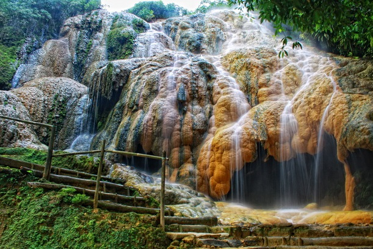

Some people said, that there is nothing much in purwokerto, its boring. Or maybe, its not boring, they just cannot find the hidden paradise there. Anyway, here some cool tourist destination in Purwokerto!
_______________________
1. Goa Sarabadak

This tourist destination is very suitable to be visited in Banyumas Regency (North Purwokerto), Central Java. Its called Goa Sarabadak and located in Kemutuk Lor Village about 14 Kilometers from the center of Purwokerto City. The water is from pancuran pitu, where hot water comming from the ground, so the water is hot and have sulfur in it. The sulfur create a cave formation under the waterfall. The thick green moss that covering the cliffs, it gives an atmosphere of freshness for tourists who are in that location.
_______________________
2. Curug Bayan Ketengger
Located right in Kalipagu Hamlet, Ketenger Village, Baturaden District (north Purwokerto), Banyumas Regency, Central Java Province, it presents a feel of calm and coolness that you won't want to miss. To get to Curug Bayan, you can use car or motor-bike. TO get to curug bayan from Purwokerto is about 30 minutes. In case you want have a night there, in the curug bayan area, there is a villa and also small restaurant there. The atmosphere there is so refreshing because its surrounder by so many trees, dont forget to come there!